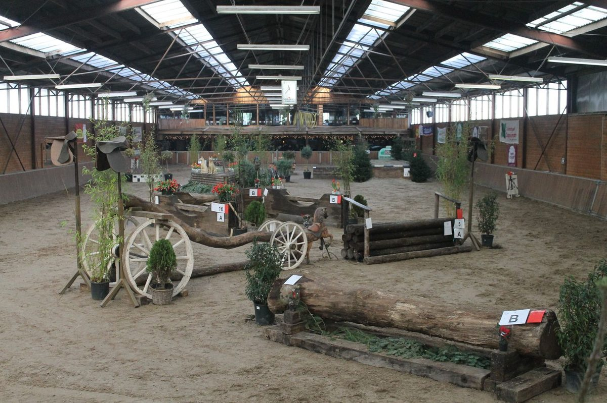
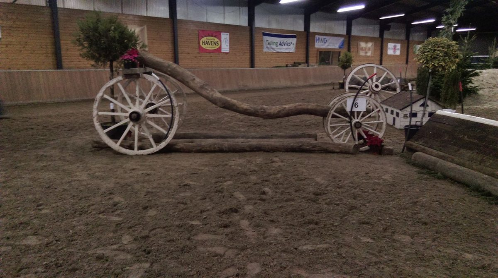

28Maandag
Trainingsdag
Laat je paard of pony wennen aan de hal en de hindernissen, onder begeleiding van erkende instructeurs.
- Trainingen8.00 tot 20.30 uur
- VoorPaard en pony
- IndelingOp niveau

Al meer dan twintig jaar halen we de cross naar binnen. Drie dagen trainen en wedstrijdrijden, met dressuur, springen en een cross over meer dan twintig hindernissen.
Kom je rijden of wil je eerst trainen? Hier begin je.

Een complete SGW in de hal. Dressuur, springen en cross, in de klassen BB tot en met Z.

Rijd het parcours onder begeleiding van erkende instructeurs, in een groep op je eigen niveau.
Laat je paard of pony wennen aan de hal en de hindernissen, onder begeleiding van erkende instructeurs.
De eerste twee onderdelen van de SGW. Daarnaast is er nog ruimte om te trainen.
Het onderdeel waar alles om draait. De cross over meer dan twintig hindernissen, met een echte heuvel, opsprongen en afsprongen.


Het begon in 1999 met een groep eventingruiters die hun paarden ook in de winter fit wilden houden. Na wat borrels en goede gesprekken stond de eerste training op de planning.
Nu organiseert een vaste groep vrijwilligers elk jaar de gezelligste Indoor SGW van Nederland.
Lees ons verhaalAlles wat je nodig hebt voor je komst naar De Mortel.
Manege Het Zwarte Water in De Mortel. Plan je route
Stalling voor je paard of pony en overnachten regel je via Het Zwarte Water: info@hetzwartewater.nl
Dat kan, maar alleen op eigen stroom. Er is ter plekke geen stroom beschikbaar.
Over de startlijsten mail je secretariaat@indoorsgw.nl. Voor al het andere info@indoorsgw.nl.
Zonder hen geen Indoor SGW. Dankjewel!
Zet je bedrijf in de schijnwerpers bij de Indoor SGW.
Schrijf je in voor de wedstrijd via Mijn KNHS of meld je aan voor een training. Een training annuleren kan kosteloos tot 15 december.



Foto's, filmpjes en het laatste nieuws over de opbouw van het parcours.
Volg Indoor SGW